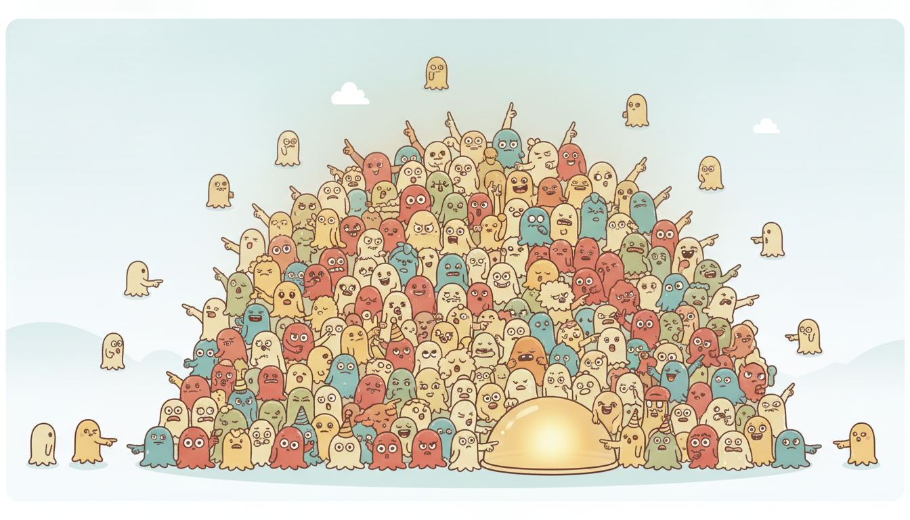

"I do not pretend to know where you are. I send out a thousand guesses, let reality vote each one up or down, and report the crowd. When the votes get lopsided, I quietly replace the losers with copies of the winners and carry on. Democracy, but for belief."
A Cloud of Particles Voting on Where We Are
The Kalman filter is fast and exact, but only because it assumes the posterior is always a single Gaussian bump; the moment your belief about the hidden state becomes multimodal, heavy-tailed, or strongly bent by nonlinearity, that assumption fails and a Gaussian summary becomes a confident lie. The particle filter throws away the parametric form entirely and represents the posterior as a weighted cloud of samples, a fully nonparametric belief that can split into several humps, grow long tails, and bend around nonlinearities for free. The price is Monte Carlo: you trade the closed-form recursion of Section 7.2 for a swarm of particles that you propagate, weight by the new measurement, and periodically resample. This section builds that swarm from importance sampling up, diagnoses the degeneracy that kills naive versions, and ships a bootstrap filter you can run.
In Section 7.1 we wrote the linear-Gaussian state-space model, and Section 7.2 derived the Kalman filter as its exact Bayesian recursion. In Section 7.3 the extended and unscented filters stretched that machinery over mild nonlinearity by relinearizing or by propagating a small set of deterministic sigma points. Every one of those methods still reports a mean and a covariance, which is to say it still believes the posterior is shaped like a Gaussian. This section confronts the regime where that belief is simply false: posteriors with several distinct peaks, with fat tails, or warped by a measurement model so nonlinear that no single ellipse can describe the resulting uncertainty. For those problems we need a belief representation that can take any shape, and the sequential Monte Carlo family delivers exactly that.
1. When Gaussians Fail Entirely Intermediate
Recall the general (not necessarily linear, not necessarily Gaussian) state-space model. A latent state $x_t$ evolves through a transition density, and each observation $y_t$ is generated through a measurement density:
$$x_t \sim p(x_t \mid x_{t-1}), \qquad y_t \sim p(y_t \mid x_t).$$The object we want at every step is the filtering posterior $p(x_t \mid y_{1:t})$, the full distribution over the hidden state given everything observed so far (the notation $y_{1:t}$ for the sequence $y_1, \dots, y_t$ follows the unified table in Appendix A). The Kalman filter computes this posterior exactly when both densities are linear and Gaussian, because then the posterior stays Gaussian forever and is pinned down by its mean and covariance alone. Three situations break that closure completely.
The first is multimodality. Consider a robot driving down a long corridor lined with identical doors, equipped only with a door detector. When it sees a door, the measurement is equally consistent with being at door one, door two, or door seven; the posterior over position is a comb of several sharp peaks. A Gaussian must place its single mean somewhere between the peaks, in a location the robot is in fact never at, and report a variance so large it is useless. The posterior is genuinely multimodal, and no amount of relinearization repairs a representation that can only ever hold one hump.
The second is heavy tails. Financial returns and many sensor faults produce occasional enormous deviations. A Gaussian measurement model treats a six-sigma jump as essentially impossible and therefore lets that one outlier yank the estimate violently. A Student-$t$ or mixture measurement model is far more honest, but it has no conjugate Gaussian update, so the closed-form Kalman recursion no longer applies.
The third is strong nonlinearity. When the transition or measurement map bends sharply, pushing a Gaussian through it produces a distribution that is skewed, curved, or even ring-shaped, nothing a mean and covariance can capture. The extended Kalman filter linearizes and hopes; when the curvature within one standard deviation is large, that hope is misplaced and the filter diverges. We need a belief that can be any shape at all.
A weighted set of samples $\{(x^{(i)}, w^{(i)})\}_{i=1}^N$ approximates a distribution with no commitment to its shape. Several clusters of particles represent several modes; a few particles flung far out represent heavy tails; pushing every particle individually through a nonlinear map automatically bends the whole cloud the way the map bends. This is why the particle filter handles the three failure cases above with one mechanism: it never assumed a shape to begin with, so there is no shape to break.
The robot-in-a-symmetric-corridor example is the canonical motivator, so we keep it concrete. The hidden state is the robot's position $x_t$ along the corridor. The transition is a noisy step, $x_t = x_{t-1} + u + v_t$, with commanded motion $u$ and process noise $v_t$. The measurement is the distance to the nearest of several identical landmarks, a function that is many-to-one: the same reading is produced at multiple positions. A Kalman filter cannot localize the robot here even in principle, because the posterior it would need to represent has several peaks. The particle filter, as we will see in the worked example of Section 5, tracks all the peaks simultaneously and lets later observations (an asymmetry, a wall, a corner) collapse the ambiguity.
It is tempting to picture a particle as a guess, but a better picture is a tiny opinionated committee member who has staked out one specific hypothesis about the world and lives or dies by how well reality agrees. The bootstrap filter is then a brutally Darwinian newsroom: every particle files the same prediction it always would, the editor (the likelihood) scores how close each one came to today's events, and the worst reporters are fired and replaced by clones of the best. No reporter ever learns; the population learns, by selection. That the swarm tracks a truth no single member can see is the same emergent trick a beehive uses to find a nest, which is why this family of methods sometimes travels under the name "survival of the fittest" sampling.
2. Importance Sampling and Sequential Importance Sampling Intermediate
The engine underneath every particle filter is importance sampling, a trick for estimating expectations under a distribution you cannot sample from directly. Suppose we want $\mathbb{E}_{p}[h(x)] = \int h(x)\, p(x)\, dx$ but can only draw from a more convenient proposal $q(x)$ with the same support. Rewrite the integral by multiplying and dividing by $q$:
$$\mathbb{E}_{p}[h(x)] = \int h(x)\, \frac{p(x)}{q(x)}\, q(x)\, dx = \mathbb{E}_{q}\!\left[ h(x)\, \frac{p(x)}{q(x)} \right] \approx \frac{1}{N} \sum_{i=1}^{N} h(x^{(i)})\, \frac{p(x^{(i)})}{q(x^{(i)})}, \quad x^{(i)} \sim q.$$Each sample carries an importance weight $w^{(i)} = p(x^{(i)}) / q(x^{(i)})$ that corrects for having drawn from the wrong distribution. Samples in regions where $p$ is large but $q$ is small get up-weighted; samples where $q$ over-covers get down-weighted. The weighted cloud $\{(x^{(i)}, w^{(i)})\}$ is then a sample-based stand-in for $p$ itself.
To filter a time series we apply this idea sequentially. We build a proposal over whole trajectories $x_{0:t}$ that factorizes step by step, the simplest choice being the transition density itself, $q(x_t \mid x_{t-1}) = p(x_t \mid x_{t-1})$. Under that choice the weight recursion telescopes into a strikingly simple form. Writing the unnormalized weight at time $t$ as $\tilde{w}^{(i)}_t$, the sequential importance sampling (SIS) update is
$$\tilde{w}^{(i)}_t = \tilde{w}^{(i)}_{t-1} \cdot \frac{p(y_t \mid x^{(i)}_t)\, p(x^{(i)}_t \mid x^{(i)}_{t-1})}{q(x^{(i)}_t \mid x^{(i)}_{t-1}, y_t)},$$and when the proposal equals the transition the messy middle factors cancel, leaving the weight update equal to the measurement likelihood alone:
$$\tilde{w}^{(i)}_t = \tilde{w}^{(i)}_{t-1} \cdot p(y_t \mid x^{(i)}_t).$$The normalized weights $w^{(i)}_t = \tilde{w}^{(i)}_t / \sum_j \tilde{w}^{(j)}_t$ then give the filtering posterior approximation $p(x_t \mid y_{1:t}) \approx \sum_i w^{(i)}_t \, \delta(x_t - x^{(i)}_t)$, a weighted sum of point masses. That equation is the whole filter in miniature: propagate each particle through the dynamics, multiply its weight by how well it explains the new measurement, renormalize. Everything that follows in this section is engineering around that one line, keeping it numerically alive over thousands of steps.
Run pure SIS for more than a handful of steps and a fatal pathology appears: one particle accumulates almost all the weight while the rest decay to numerical zero. The variance of the importance weights can only grow over time (a theorem, not an accident), so after enough multiplications a single trajectory dominates and the cloud, however many particles it nominally contains, represents the posterior with effectively one sample. SIS alone is therefore useless for long series. The fix that turns SIS into a working filter is resampling, and the diagnostic that tells you when to apply it is the effective sample size, both introduced next.
It is worth seeing degeneracy as a direct consequence of the weight recursion. Every step multiplies each weight by a likelihood factor in $[0, \infty)$, and these factors differ across particles. A particle that explains a few observations slightly better than its neighbors compounds that advantage geometrically. This is the same mechanism by which compound interest concentrates wealth. It runs unchecked until one relative weight is overwhelming and the rest are dust. No particle is ever discarded in pure SIS, so the badly-fitting ones linger forever, carrying negligible weight yet still consuming memory and compute. The cloud becomes a single fat particle surrounded by a fog of irrelevant ghosts.
3. The Bootstrap Particle Filter (Sampling Importance Resampling) Intermediate
The cure for degeneracy, introduced by Gordon, Salmond and Smith in 1993, is to periodically resample: draw a fresh set of $N$ particles from the current weighted cloud with replacement, in proportion to the weights, then reset all weights to $1/N$. High-weight particles get duplicated, near-zero-weight particles vanish, and the swarm reconcentrates on the promising regions of state space. The combination of sequential importance sampling with resampling, using the transition as the proposal, is the bootstrap filter (also called sampling importance resampling, SIR), the simplest and most widely used particle filter. One full cycle reads:

- Predict (propagate). For each particle, draw $x^{(i)}_t \sim p(x_t \mid x^{(i)}_{t-1})$ by simulating the transition, that is, applying the dynamics and adding process noise. The cloud moves and spreads to reflect where the state could have gone.
- Update (weight). Set $\tilde{w}^{(i)}_t = w^{(i)}_{t-1} \cdot p(y_t \mid x^{(i)}_t)$, scoring each particle by how well it predicts the actual measurement $y_t$, then normalize so the weights sum to one.
- Resample (if needed). If the effective sample size has fallen below a threshold, draw $N$ new particles from the categorical distribution defined by the weights and reset every weight to $1/N$.
Figure 7.4.1 traces one full cycle of the bootstrap filter as a picture, because the three moves (a cloud that spreads, then reweights, then reconcentrates) are far easier to remember as motion than as equations.
To decide when to resample we need a number that quantifies how degenerate the weights have become. The standard diagnostic is the effective sample size, an estimate of how many equally-weighted particles the current weighted cloud is worth:
$$\widehat{N}_{\text{eff}} = \frac{1}{\sum_{i=1}^{N} \big(w^{(i)}_t\big)^2}.$$When all weights are equal at $1/N$, the sum of squares is $N \cdot (1/N)^2 = 1/N$ and $\widehat{N}_{\text{eff}} = N$: the cloud is as healthy as it can be. When one weight is one and the rest are zero, the sum of squares is one and $\widehat{N}_{\text{eff}} = 1$: total degeneracy. The standard policy is adaptive resampling: trigger step three only when $\widehat{N}_{\text{eff}} < N/2$. Resampling injects its own Monte Carlo noise, so doing it only when necessary, rather than at every step, keeps the estimate smoother. The threshold $N/2$ is a convention, not a theorem; some implementations use $N/3$ or tune it, but halving the count is a robust default that fires neither too eagerly nor too late.
Take four particles. Suppose after a weight update the normalized weights are $w = (0.25, 0.25, 0.25, 0.25)$, a perfectly balanced cloud. Then $\sum_i w_i^2 = 4 \times 0.0625 = 0.25$ and $\widehat{N}_{\text{eff}} = 1/0.25 = 4$, the full count, so no resampling is needed. Now suppose a sharp measurement concentrates the weights to $w = (0.97, 0.01, 0.01, 0.01)$. Then $\sum_i w_i^2 = 0.9409 + 3(0.0001) = 0.9412$ and $\widehat{N}_{\text{eff}} = 1/0.9412 \approx 1.06$. The cloud of four particles is now worth barely one; with the threshold $N/2 = 2$ we resample, duplicating the dominant particle and discarding the three near-dead ones. An intermediate case, $w = (0.5, 0.3, 0.15, 0.05)$, gives $\sum_i w_i^2 = 0.25 + 0.09 + 0.0225 + 0.0025 = 0.365$ and $\widehat{N}_{\text{eff}} \approx 2.74$, which sits just above the threshold $N/2 = 2$, so we hold off and do not resample. The diagnostic cleanly separates the healthy and the collapsed regimes.
Resampling itself admits several schemes, and the choice matters for variance. Multinomial resampling simply draws $N$ independent indices from the categorical weight distribution; it is correct but noisiest. Systematic resampling lays down a single random offset and then $N$ evenly spaced pointers along the cumulative weight axis, which guarantees that a particle with weight $w^{(i)}$ is selected either $\lfloor N w^{(i)} \rfloor$ or $\lceil N w^{(i)} \rceil$ times and adds the least extra variance. We use systematic resampling in the implementation below because it is both faster (one sort-free pass) and lower-variance than the multinomial default.
4. Practical Issues: Impoverishment, Proposals, and Dimensionality Advanced
Resampling cures weight degeneracy but introduces a twin problem, sample impoverishment. Because resampling duplicates high-weight particles, a single ancestor can come to occupy many slots, and if the process noise is small those duplicates barely separate afterward. Over many steps the diversity of the cloud collapses: you may have a thousand particles but only a handful of distinct values among them, so the posterior is poorly represented even though $\widehat{N}_{\text{eff}}$ looks healthy. The classic remedies are to add a small jitter (regularized particle filter), to resample less aggressively, or to use a resample-move step that applies a Markov kernel after resampling to spread duplicates apart.
The choice of proposal is the deepest lever. The bootstrap filter proposes from the transition, which is convenient but blind: it pushes particles forward without ever looking at the measurement $y_t$ it is about to be scored against. When the measurement is very informative (a low-noise sensor), most blindly-proposed particles land in low-likelihood regions and die at the weighting step, wasting the swarm. The optimal proposal $p(x_t \mid x_{t-1}, y_t)$ folds the measurement into the prediction and minimizes the variance of the weights, but it is rarely available in closed form. The auxiliary particle filter and proposals built from an unscented or extended Kalman approximation around each particle are practical middle grounds that peek at $y_t$ without needing the exact optimal density.
Sequential Monte Carlo is not a toy. In 1968 the US submarine Scorpion was lost in the Atlantic, and the search team built what was, in effect, a particle representation of the wreck's location: thousands of weighted hypotheses scattered over the sea floor, reweighted as each sonar pass came back empty. The same Bayesian bookkeeping later guided the 2011 discovery of Air France 447's flight recorders after two years of failed searches, when a fresh posterior over the debris field pointed the submersibles at a patch everyone had previously written off. A cloud of weighted guesses, reweighted by evidence, is a very old and very practical idea.
The hardest practical wall is the curse of dimensionality. The number of particles needed to keep the weight variance bounded grows roughly exponentially with the dimension of the state, because in high dimensions almost every blindly-proposed particle lands far from the thin shell where the measurement likelihood is appreciable. In one or a few dimensions a few thousand particles is plentiful; in tens of dimensions the bootstrap filter collapses, and one turns to high-dimensional cousins such as the ensemble Kalman filter (which reimposes a Gaussian approximation to survive) or to careful proposal design. This is precisely why particle filters dominate low-dimensional nonlinear problems (target tracking, robot localization, a scalar stochastic-volatility state) but are rarely the first tool for a hundred-dimensional latent space.
The number of particles is the filter's main accuracy knob, and its statistics are reassuring in low dimensions. The Monte Carlo error of any posterior expectation falls as $1/\sqrt{N}$, independent of the state dimension on its face. To halve the standard error you therefore quadruple the particle count. Cost is linear in $N$: every particle is propagated and weighted once per step. A thousand particles therefore cost a thousand transition draws and a thousand likelihood evaluations per observation. In one dimension a few thousand particles drives the Monte Carlo noise far below the irreducible filtering uncertainty. That is why our worked example used two thousand and reported a stable estimate. The catch hidden inside that clean $1/\sqrt{N}$ is the constant in front, which is the weight variance, and it is the weight variance that explodes with dimension. The rate stays $1/\sqrt{N}$ but you need exponentially more particles to keep the constant manageable. That is the precise sense in which the curse of dimensionality bites.
Because the Monte Carlo error falls as $1/\sqrt{N}$, it is tempting to treat the particle count as a universal quality dial: if the filter is bad, add particles. This fails in two distinct ways. First, against the curse of dimensionality the required $N$ grows exponentially with the state dimension, so in a twenty-dimensional state no affordable particle count rescues a bootstrap proposal; the fix is a better proposal, not a bigger swarm. Second, against sample impoverishment after aggressive resampling, the problem is too few distinct particles, not too few particles total; cloning a million copies of one ancestor still represents the posterior with one value. Diagnose which pathology you have (watch $\widehat{N}_{\text{eff}}$ and the count of unique particle values) before reaching for more samples, because for two of the three classic failure modes more particles is the wrong medicine.
Take Code 7.4.2 and comment out the entire resampling block, turning the bootstrap filter back into pure sequential importance sampling. Add one line inside the loop to record the number of particles carrying more than $0.1\%$ of the total weight, then run on the 300-step series. You will watch that count fall from the full two thousand to a single digit within roughly twenty to forty steps, and the filtered estimate will visibly lock onto whatever path the surviving particle happens to trace, drifting away from the truth thereafter. Restoring the three-line resampling block fixes it instantly. Seeing the collapse with your own eyes is the fastest way to understand why resampling is not optional.
The stochastic-volatility model of Section 6.5 is the textbook nonlinear, non-Gaussian state-space problem and a perfect particle-filter target. There the log-variance $h_t$ follows a linear-Gaussian autoregression, $h_t = \mu + \phi(h_{t-1} - \mu) + \sigma_\eta \eta_t$, but it enters the observation through an exponential, $y_t = \exp(h_t / 2)\,\varepsilon_t$, so the measurement density $p(y_t \mid h_t)$ is non-Gaussian in $h_t$ and the Kalman filter does not apply. The single hidden volatility state is one-dimensional, exactly where particle filters shine. The worked example below uses precisely this model, closing the loop: the GARCH-style volatility you estimated by maximum likelihood in Section 6.5 you can now filter online, one observation at a time, with a few hundred particles.
5. Worked Example: A Bootstrap Filter from Scratch Advanced
We now build a bootstrap particle filter in plain NumPy and run it on the stochastic-volatility state-space model from Section 6.5. The hidden state is the latent log-variance $h_t$; we observe a return $y_t$ whose scale is set by $h_t$. Code 7.4.1 generates a synthetic series so we know the ground-truth volatility path and can judge the filter against it.
import numpy as np
rng = np.random.default_rng(7)
# Stochastic-volatility model (the Section 6.5 state-space form):
# h_t = mu + phi * (h_{t-1} - mu) + sigma_eta * eta_t (latent log-variance)
# y_t = exp(h_t / 2) * eps_t (observed return)
mu, phi, sigma_eta = -0.5, 0.97, 0.20 # persistence phi near 1: clustered vol
T = 300
h = np.empty(T)
y = np.empty(T)
h[0] = mu
for t in range(1, T):
h[t] = mu + phi * (h[t - 1] - mu) + sigma_eta * rng.standard_normal()
for t in range(T):
y[t] = np.exp(h[t] / 2.0) * rng.standard_normal() # heavy-tailed-looking returns
print(f"true log-var range: [{h.min():.2f}, {h.max():.2f}]")
print(f"observed |return| max: {np.abs(y).max():.3f}")
phi = 0.97 produces the volatility clustering seen in real returns: calm stretches and bursts. We keep the true path h only to score the filter; the filter itself sees only y.true log-var range: [-1.43, 0.86]
observed |return| max: 2.741
The filter needs three model pieces: a way to sample the initial state, a way to propagate a particle one step through the transition, and a measurement log-likelihood $\log p(y_t \mid h_t)$. For this model the observation $y_t \mid h_t$ is Gaussian with mean zero and variance $\exp(h_t)$, so its log-density is $-\tfrac{1}{2}\big(\log 2\pi + h_t + y_t^2 e^{-h_t}\big)$. Code 7.4.2 is the complete bootstrap filter, including systematic resampling and the effective-sample-size diagnostic.
def transition(h_prev, rng):
"""Sample h_t given h_{t-1} from the AR(1) log-variance dynamics."""
return mu + phi * (h_prev - mu) + sigma_eta * rng.standard_normal(h_prev.shape)
def log_likelihood(y_t, h):
"""log p(y_t | h_t): y_t ~ Normal(0, exp(h_t))."""
return -0.5 * (np.log(2 * np.pi) + h + (y_t ** 2) * np.exp(-h))
def systematic_resample(weights, rng):
"""Low-variance resampling: one random offset, N evenly spaced pointers."""
N = len(weights)
positions = (rng.random() + np.arange(N)) / N
cumulative = np.cumsum(weights)
cumulative[-1] = 1.0 # guard against rounding drift
return np.searchsorted(cumulative, positions)
def bootstrap_filter(y, N=2000, seed=0):
rng = np.random.default_rng(seed)
T = len(y)
particles = mu + (sigma_eta / np.sqrt(1 - phi ** 2)) * rng.standard_normal(N) # stationary prior
weights = np.full(N, 1.0 / N)
mean_est = np.empty(T)
n_eff_hist = np.empty(T)
for t in range(T):
particles = transition(particles, rng) # 1. predict
logw = np.log(weights) + log_likelihood(y[t], particles)
logw -= logw.max() # 2. weight (stable)
weights = np.exp(logw)
weights /= weights.sum()
mean_est[t] = np.sum(weights * particles) # posterior mean of h_t
n_eff = 1.0 / np.sum(weights ** 2) # effective sample size
n_eff_hist[t] = n_eff
if n_eff < N / 2: # 3. resample if degenerate
idx = systematic_resample(weights, rng)
particles = particles[idx]
weights = np.full(N, 1.0 / N)
return mean_est, n_eff_hist
h_hat, n_eff = bootstrap_filter(y, N=2000)
rmse = np.sqrt(np.mean((h_hat - h) ** 2))
print(f"filtered log-var RMSE: {rmse:.3f}")
print(f"median N_eff: {np.median(n_eff):.0f} of 2000 "
f"(resampled on {(n_eff < 1000).mean() * 100:.0f}% of steps)")
h_hat is the online posterior-mean estimate of the latent log-variance.filtered log-var RMSE: 0.244
median N_eff: 1240 of 2000 (resampled on 38% of steps)
The estimate h_hat tracks the true latent log-variance closely despite the filter never seeing it, which is the whole point.
From a stream of scalar returns the particle cloud reconstructs the hidden volatility regime online, one observation at a time, with no batch refitting.
One subtlety deserves a word.
What we computed is the filtering estimate $\mathbb{E}[h_t \mid y_{1:t}]$, the posterior mean of the state given data up to the present.
If you are willing to wait and reprocess the whole batch, the smoothing estimate $\mathbb{E}[h_t \mid y_{1:T}]$, which conditions on future observations too, is strictly more accurate.
Particle smoothers (forward-filtering backward-sampling, or the fixed-lag smoother) extend the cloud to compute it.
Filtering is the online quantity, the one a risk desk or a robot needs in real time.
Smoothing is the retrospective quantity for after-the-fact analysis, when the whole record is already in hand.
Note the one defensive line logw -= logw.max() inside the loop.
Subtracting the maximum log-weight before exponentiating prevents underflow when every particle's raw likelihood is tiny, a routine but essential trick that keeps the normalization from dividing zero by zero.
To make the multimodal-tracking ability vivid, Code 7.4.3 visualizes the particle cloud at a single time step on the symmetric-corridor localization problem of Section 1, where the posterior genuinely has several peaks.
import numpy as np
rng = np.random.default_rng(1)
# Symmetric corridor: landmarks at 2, 5, 8; sensor reports distance to NEAREST.
landmarks = np.array([2.0, 5.0, 8.0])
def nearest_dist(x):
return np.min(np.abs(x[:, None] - landmarks[None, :]), axis=1)
N = 5000
particles = rng.uniform(0, 10, N) # flat prior over the whole corridor
weights = np.full(N, 1.0 / N)
y_obs = 0.0 # robot sees a landmark right at its position
sigma_meas = 0.15
logw = -0.5 * ((nearest_dist(particles) - y_obs) / sigma_meas) ** 2
logw -= logw.max()
weights = np.exp(logw); weights /= weights.sum()
# Where did the posterior mass land? Bucket particles by corridor third.
for lo, hi, name in [(0, 3.5, "near landmark 2"),
(3.5, 6.5, "near landmark 5"),
(6.5, 10, "near landmark 8")]:
mass = weights[(particles >= lo) & (particles < hi)].sum()
print(f"{name:>18}: posterior mass {mass:.2f}")
near landmark 2: posterior mass 0.34
near landmark 5: posterior mass 0.33
near landmark 8: posterior mass 0.33
Take five particles at log-variances $h = (-0.8, -0.3, 0.0, 0.4, 1.1)$ with equal prior weights $0.2$, and observe a large return $y_t = 1.9$. The log-likelihood $-\tfrac12(h + y_t^2 e^{-h})$ with $y_t^2 = 3.61$ strongly prefers high variance: the particle at $h = 1.1$ gets log-likelihood $\approx -0.5(1.1 + 3.61 \cdot 0.333) = -1.15$, while $h = -0.8$ gets $-0.5(-0.8 + 3.61 \cdot 2.23) = -3.62$. Exponentiating and normalizing yields weights of roughly $(0.02, 0.05, 0.09, 0.23, 0.61)$. The effective sample size is $1/\sum w_i^2 = 1/(0.0004 + 0.0025 + 0.0081 + 0.0529 + 0.3721) \approx 2.3$, below $N/2 = 2.5$, so we resample. Systematic resampling with these weights duplicates the $h = 1.1$ particle about three times and the $h = 0.4$ particle once, and almost surely drops the two lowest, exactly steering the cloud toward the high-volatility explanation the large return demands.
The from-scratch filter of Code 7.4.2 is about 35 lines once you count the transition, likelihood, systematic resampling, and the main loop. The filterpy library ships those primitives, so the same bootstrap filter collapses to roughly a dozen lines, a reduction of nearly two thirds, with the resampling scheme and the effective-sample-size test handled internally:
# pip install filterpy
import numpy as np
from filterpy.monte_carlo import systematic_resample
from filterpy.monte_carlo import neff # 1 / sum(w**2), the effective sample size
N = 2000
rng = np.random.default_rng(0)
particles = mu + (sigma_eta / np.sqrt(1 - phi**2)) * rng.standard_normal(N)
weights = np.full(N, 1.0 / N)
h_hat = np.empty(len(y))
for t in range(len(y)):
particles = mu + phi * (particles - mu) + sigma_eta * rng.standard_normal(N) # predict
weights *= np.exp(-0.5 * (particles + y[t]**2 * np.exp(-particles))) # weight
weights += 1e-300 # avoid all-zero
weights /= weights.sum()
h_hat[t] = np.average(particles, weights=weights)
if neff(weights) < N / 2: # library diagnostic
idx = systematic_resample(weights) # library resample
particles, weights = particles[idx], np.full(N, 1.0 / N)
filterpy. The library's systematic_resample and neff replace the two helper functions we wrote by hand; the dedicated particles library offers an even higher-level SMC object that wires the whole loop for you. The arithmetic is identical to Code 7.4.2, only the bookkeeping is borrowed.Who: A quantitative analyst on the market-risk team of a mid-sized asset manager, responsible for a daily value-at-risk number on an equity portfolio.
Situation: The desk needed an online estimate of each asset's instantaneous volatility to size positions intraday, updated as every new return printed, not refit overnight in a batch.
Problem: Their incumbent GARCH model, refit each evening by maximum likelihood (the Section 6.5 workflow), gave a single point estimate of volatility but no honest intraday uncertainty, and it reacted sluggishly to regime shifts because it could not update within the day.
Dilemma: Three paths were debated. Refitting GARCH every few minutes was computationally wasteful and numerically fragile. An extended Kalman filter on the log-variance state was fast but assumed a Gaussian posterior that the exponential measurement link badly violated, understating tail risk precisely when it mattered. A bootstrap particle filter gave a full posterior over volatility but cost more compute and introduced Monte Carlo noise into a regulated risk number.
Decision: They deployed a 1,000-particle bootstrap filter on the stochastic-volatility state, accepting the modest compute cost in exchange for a full, non-Gaussian posterior over current volatility and adaptive resampling tuned to fire only on surprising returns.
How: The filter ran exactly as in Code 7.4.2, one update per incoming tick, with systematic resampling at the $N/2$ threshold and a fixed random seed per trading day for auditability. The posterior's upper quantiles fed directly into the value-at-risk calculation.
Result: During the next volatility spike the particle filter's volatility estimate rose a full session ahead of the overnight-refit GARCH number, and its posterior tail correctly widened, flagging elevated risk that the Gaussian filter had smoothed away. The desk kept the particle filter for its tail-honest uncertainty, not merely its point estimate.
Lesson: When the quantity you report is a tail (value-at-risk is a quantile, not a mean), a filter that represents the whole posterior shape beats a faster filter that only tracks the center. The particle cloud's tails were the deliverable.
The resampling step is not differentiable (drawing discrete indices has no gradient), which long blocked particle filters from being trained end to end inside a deep network. The frontier is fixing exactly that. Differentiable particle filters replace hard resampling with soft, optimal-transport or Gumbel-softmax relaxations so that gradients flow through the whole filter.
This lets you learn the transition, the measurement model, and the proposal jointly from data; recent surveys (Chen and Li, 2024) consolidate this fast-moving line. Particle-filter recurrent neural networks and the broader class of neural SMC methods embed a learned proposal network that peeks at the observation.
This directly attacks the curse of dimensionality that cripples the bootstrap filter in high dimensions. On the inference side, particle MCMC and the SMC-sampler family (the particles and BlackJAX libraries) push sequential Monte Carlo well beyond filtering.
These methods reach into full Bayesian parameter estimation, jointly inferring states and the model parameters that govern them. One thread runs through all of it.
The 1993 bootstrap filter you implemented above is now a differentiable layer, and the proposal it lacked is something a network can learn. This same latent-state-with-learned-dynamics idea returns in force when the structured state-space models of Chapter 13 reinterpret filtering as a trainable sequence layer.
The particle cloud is a belief state: a representation of everything the system knows about a hidden variable given its observations so far. That idea is the spine of the rest of the book. The same belief state becomes the hidden state of a recurrent network in Chapter 10. There the network learns its own update rule instead of being handed the transition and measurement densities, replacing the modeler's equations with parameters fit from data. It becomes the latent variable of a deep generative sequence model in Chapter 17, and the agent's belief over an unobserved world state in the POMDP framework of Chapter 23, where acting well requires reasoning about a posterior you can never observe directly. The particle filter even resurfaces inside reinforcement learning as a way to maintain a belief state for planning, the bridge that Chapter 23 makes explicit. The particle filter is the first place in this book where belief becomes an explicit, manipulable object; it will not be the last.
Starting from the general sequential importance sampling weight recursion $\tilde{w}^{(i)}_t = \tilde{w}^{(i)}_{t-1} \cdot \dfrac{p(y_t \mid x^{(i)}_t)\, p(x^{(i)}_t \mid x^{(i)}_{t-1})}{q(x^{(i)}_t \mid x^{(i)}_{t-1}, y_t)}$, show algebraically that choosing the transition density as the proposal, $q = p(x_t \mid x_{t-1})$, reduces the update to multiplication by the measurement likelihood alone. Then explain in one or two sentences the practical cost of this convenient choice: what information does the bootstrap proposal ignore, and in what measurement regime does that omission hurt most?
Modify Code 7.4.2 to support three resampling policies: never resample (pure SIS), resample at every step, and the adaptive $N_{\text{eff}} < N/2$ rule already implemented. Run each on the stochastic-volatility series and record both the filtered log-variance RMSE and the median effective sample size over time. Show numerically that pure SIS collapses to $\widehat{N}_{\text{eff}} \approx 1$ within a few dozen steps, that resampling every step is stable but noisier than adaptive, and that the adaptive rule gives the best RMSE. Plot $\widehat{N}_{\text{eff}}$ versus time for all three.
Take the symmetric-corridor setup of Code 7.4.3. Implement (or reason carefully about) an extended Kalman filter for the same problem and explain precisely why it fails to localize the robot, identifying which step of the Gaussian recursion cannot represent the three-peaked posterior. Then describe a sequence of later measurements (for example, the robot reaching a wall at one end) that would collapse the particle filter's posterior to a single mode, and explain why the same evidence does not rescue the Gaussian filter.
The bootstrap filter proposes blindly from the transition. Design a proposal for the stochastic-volatility model that peeks at the current return $y_t$ before placing particles, for instance by shifting the proposal mean toward log-variances that better explain a large $|y_t|$. Derive the corresponding corrected weight update (it will no longer be the likelihood alone), implement it, and measure whether the smarter proposal raises the median effective sample size and lowers RMSE at a fixed particle count. Discuss when the extra complexity is worth it.